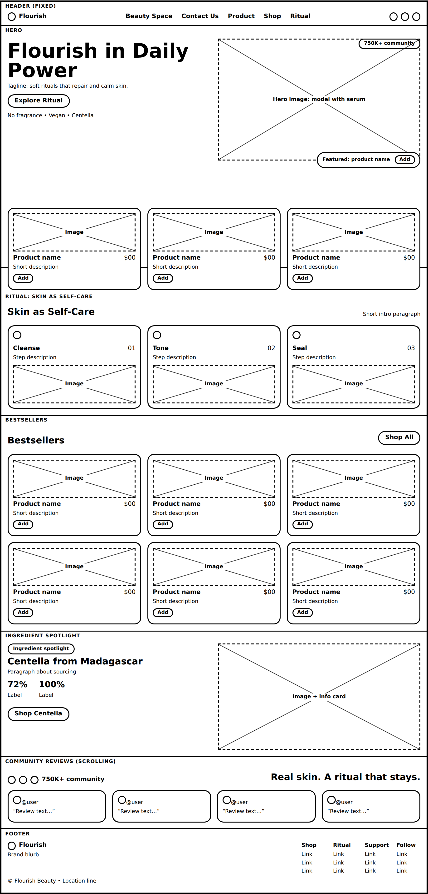
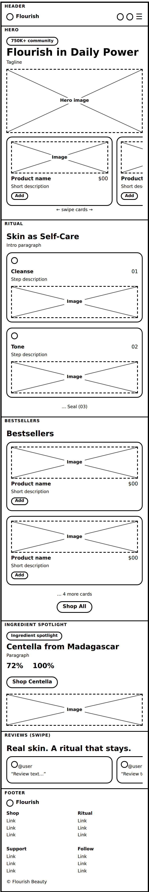

Site Name
Flourish Beauty Space
This name was selected because it represents the core philosophy seen in the design reference: "Give life to your inner world and flourish in your uniqueness". The word Flourish evokes growth, radiance, and self-care, while Beauty Space suggests both a physical spa and a digital editorial space. It is short, memorable, luxurious, and perfect for branding a Centella-based skincare line focused on skin recovery and calming.
Domain flourish-beauty.space / flourishskincare.co - Concept domain for portfolio use, not required to be purchased for class.
Site Purpose
The site provides a hub for luxury skincare education and shopping, focused on Centella-based recovery products.
- Provides detailed product information including ingredients, benefits, size, price, and how to use serums and foam cleansers.
- Offers an e-commerce experience using dynamic features: product catalog loaded from JSON, cart and wishlist using localStorage, and filtering via browser APIs.
- Shares editorial content through the Beauty Space / Journal - routines, ingredient deep-dives, and community testimonials (750K+ community).
- Serves as a three-page informational site that demonstrates valid HTML, accessible CSS, responsive design, and performance optimization.
Scenarios
Target audience: Women 20-35 interested in clean, calming skincare for sensitive skin.
- What is the best Centella product for sensitive, irritated skin and how much does it cost? - Visitor wants to compare the Ampoule Foam vs Calming Pads vs Facial Serum, see prices ($68.99, $27.69) and benefits.
- Where can I find your skincare routine and ingredient information? - Visitor is looking for educational content about how to use the products and what makes Centella effective.
- How do I save products and checkout securely? - Visitor wants to add items to cart/wishlist and understand the checkout flow.
Color Scheme
Selected palette is inspired by the screenshot reference - soft taupe luxury minimalism that feels calm and premium.
Contrast ratio checked: Black #1A1A1A on Cream #F7F3EF = 16.5:1 (WCAG AAA), White on Taupe #C4B8AD = 4.8:1 (WCAG AA). This document itself uses this exact color scheme.
Typography
Only two fonts to keep it luxury and performant.
Outfit - Used for Headings (h1, h2, h3), Logo, Product Names, Buttons
Flourish in Daily Power
Inter - Used for Body, Paragraphs, Navigation, Small UI text
Give life to your inner world and flourish in your uniqueness, even if you seem a little strange to those around you, just be yourself and free.
Reason: Outfit is a modern geometric sans that feels premium and bold for hero headlines (matching the screenshot). Inter is highly readable for body copy and is optimized for web performance and accessibility.
Wireframe - Home Page
Hand-drawn style wireframes focusing on structure, not color. No AI-generated HTML wireframe - these are sketches representing layout thinking.
Large Viewport - Desktop 1200px / 1440px

Layout: 12-col grid, header fixed 1200px container, hero 50/50 grid (headline left, image right), featured products 3-col grid, footer with info/links. CTA primary = black pill, secondary = outline.
Small Viewport - Mobile 375px

Layout: 1-col vertical stack, sticky hamburger header, hero image stacked below headline, Shop Now CTA, Bestsellers single column cards with image left + text right, footer links stacked. Touch targets 44px+.
Testing & Compliance Plan
- HTML Validation: Will test final site plan and all pages via W3C Markup Validator.
- Accessibility: WAVE tool - ensure alt text for product images, proper heading hierarchy, ARIA labels for cart/wishlist icons.
- Performance: Lighthouse audit - optimize transparent PNGs, lazy load product images, use font-display swap.
- Color Contrast: WebAIM Contrast Checker - verified above for AA/AAA compliance.